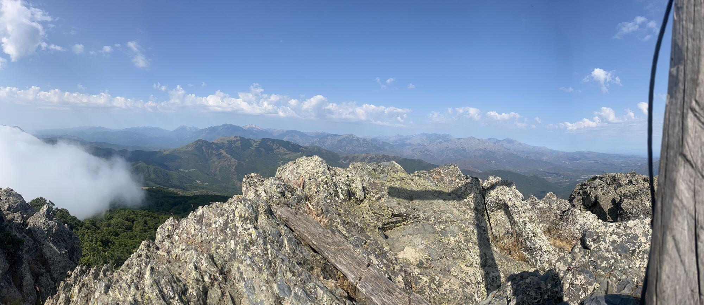

A 985 méteres tengerszint feletti magasságban húzódó Col de Prato az egyik legszebb és legnyugodtabb hegyi hágó Korzika belső, erdős vidékein. Ahogy az út felér a tetőre, a sűrű gesztenye- és bükkerdők hirtelen kinyílnak, és lélegzetelállító kilátás tárul a látogató elé a Castagniccia hullámzó, mélyzöld völgyeire és a távolban magasodó sziklás hegyvonulatokra. Ez a hágó évszázadok óta kulcsfontosságú összekötő kapu a sziget belső mikrorégiói között, ahol a tiszta, hűvös hegyi levegő és a természet csendje azonnal magával ragadja az utazót.
A Col de Prato a természetjárók és bakancsos túrázók igazi Mekkája, ugyanis innen indul a régió legnépszerűbb és legszebb gyalogtúrája a Monte San Petrone (1767 m) csúcsára. A hágótól induló, jól jelzett ösvény fenséges, ősi bükkerdőkön és árnyas gesztenyéseken keresztül vezet felfelé, fokozatosan feltárva a sziget drámai domborzatát. Azok számára is tökéletes kiindulópont ez, akik rövidebb, kevésbé megerőltető sétákra vágynak, hiszen a hágó körüli lankás gerincek és erdei utak ideális terepet biztosítanak ahhoz, hogy közelebbről is megismerjük a belső Korzika egyedülálló, gazdag flóráját és faunáját.
A hágó környéke a mai napig a hagyományos, szabad tartású korzikai állattenyésztés (agro-pastoralizmus) élő színtere. Nem meglepő, ha a réteken vagy akár az úttest szélén békésen legelésző tehéncsordákkal, félvad sertésekkel vagy kecskenyájakkal találkozunk, amelyek teljesen hozzátartoznak a táj autentikus hangulatához. A Col de Prato kulturális jelentőségét növeli, hogy minden év augusztusában itt rendezik meg a sziget egyik legfontosabb és legősibb hagyományőrző vásárát (Fiera di u Pratu). Ez az esemény a helyi pásztorok, sajtkészítők és kézművesek ünnepe, ahol a látogatók belekóstolhatnak a híres korzikai gasztronómiába, miközben felcsendülnek a sziget hagyományos, többszólamú polifónikus népdalai.